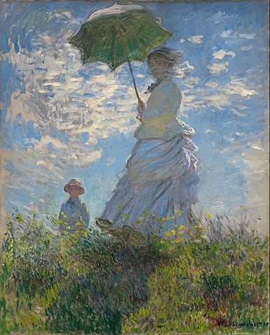

Both parasols and umbrellas are personal portable devices to shield oneself from either the sun (parasol) or inclement weather, like the rain (umbrella). Basically, these personal items have handles with mounted ribs covered by a suitable material. It can be opened by pushing up a runner, stretching-out the ribs into a semi-circle; when done it is folded down to a vertical shaft.
 Parasol is from the French – para ("to shield") and sol ("the sun"). The parasol's origins go far as back to the ancient Assyrian city of Nineveh (abandoned in 612 BCE) where it is depicted in many sculptures, as well as to ancient Egypt, Greece and China. Its primarily use then, as is today: to shield us from the strong daylight and as decorative objects.
Parasols have been part of the fabric of art, like Claude Monet's 1875 painting, Woman with a Parasol - Madame Monet and Her Son.
Here at WORLD OF PARASOLS we sell many designs, not just varying colors, but different shapes and sizes. WORLD OF PARASOLS is the place where you can indulge in luxury with parasols that are made with the best materials, and yet, at resonable prices. Whether you need a parasol to create a personal shade from the bright sun or to decorate your hacienda, WORLD OF PARASOLS is your site for exoctic, traditional or... just fun parasols!
To view and purchase parasols here at WORLD OF PARASOLS click here or on the Navigation Bar. If you have questions or need more information, click the CONTACT button on the right of the Navigation Bar.